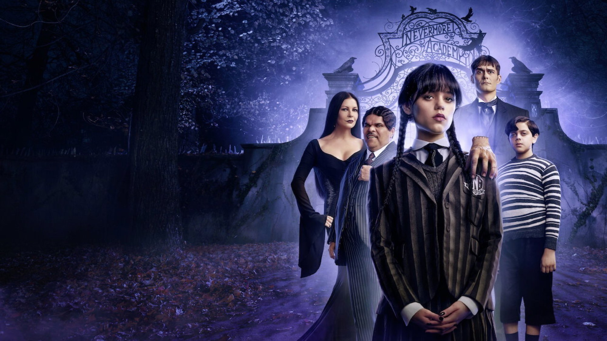
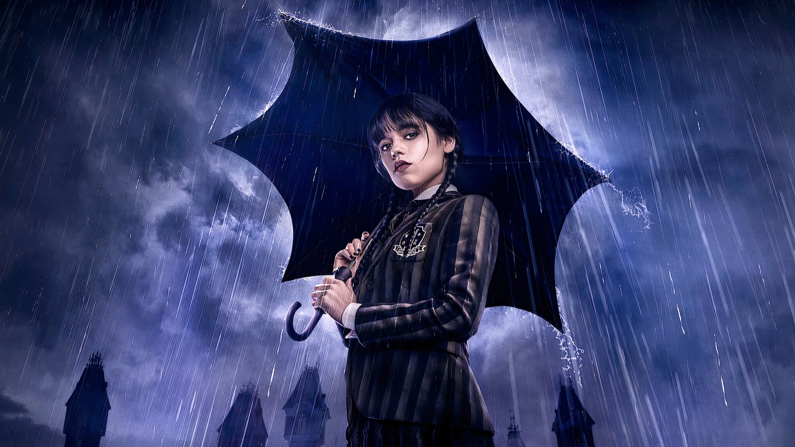

Wednesday – Stagione 2
Tim Burton torna dietro la macchina da presa, arrivano Steve Buscemi e Lady Gaga, Jenna Ortega resta magnetica: una seconda stagione più ricca, ma anche più dispersiva
Quando una serie diventa un fenomeno globale come Wednesday, la seconda stagione è sempre la prova più difficile: bisogna dare al pubblico quello che ha amato senza ripetersi. Netflix ha scelto la strada dell'evento, dividendo gli otto nuovi episodi in due parti, la prima il 6 agosto e la seconda il 3 settembre 2025. Ora che la stagione è completa, possiamo dire che la scommessa è riuscita a metà: più ricca e più spettacolare della prima, ma anche più dispersiva.
Di cosa parla la seconda stagione di Wednesday?
Mercoledì Addams, sempre con il volto impassibile di Jenna Ortega, torna alla Nevermore Academy dopo gli eventi della prima stagione, con poteri psichici che non funzionano più come prima. Questa volta deve impedire una morte che le visioni le hanno mostrato, quella dell'amica Enid, mentre una nuova minaccia si muove intorno alla scuola. E non è più sola: il fratello Pugsley si iscrive all'accademia, e la famiglia Addams ha molto più spazio, con Catherine Zeta-Jones e Luis Guzmán promossi a protagonisti fissi.
Tra i nuovi volti, Steve Buscemi interpreta il nuovo preside Barry Dort, Billie Piper una professoressa di musica e Joanna Lumley la nonna di Mercoledì. Nella seconda parte arriva anche Lady Gaga, in un ruolo da ospite molto atteso dai fan.
Cosa funziona: Ortega e l'occhio di Tim Burton
Jenna Ortega resta il cuore della serie, e questa volta la sceneggiatura le toglie la sua arma migliore: le visioni che nella prima stagione le davano sempre un passo di vantaggio ora si inceppano, e Mercoledì deve inseguire il mistero invece di anticiparlo. È una scelta intelligente, perché costringe un personaggio costruito sul controllo a fare i conti con il dubbio. Ortega non cambia registro, resta asciutta e impassibile, ed è proprio quella fissità a rendere più evidenti i momenti in cui il personaggio vacilla.
Tim Burton ha diretto quattro episodi, il primo, il quarto e i due finali, mentre gli altri sono firmati da Paco Cabezas e Angela Robinson: la sua impronta si vede nelle scenografie, nei costumi e nel gusto per il macabro giocoso. Il cambiamento più visibile, però, è il trasloco. La prima stagione era stata girata in Romania, con il castello Cantacuzino a fare da Nevermore; la seconda si è spostata in Irlanda, tra il Charleville Castle nella contea di Offaly, il cimitero di Dean's Grange vicino a Dublino e gli Ashford Studios nel Wicklow. Pietra vera e tombe vere danno alla serie un gotico più concreto. Buscemi, nei panni del nuovo preside Barry Dort, è un'aggiunta azzeccata: ambiguo, buffo e inquietante al punto giusto.
Va ricordato anche quanto sia stato lungo il lavoro: secondo Wikipedia le riprese irlandesi sono andate dal 7 maggio al 4 dicembre 2024, quasi sette mesi per otto episodi. Si sente nella cura dei dettagli, dalle scenografie ai costumi, e si capisce perché la serie abbia l'aria di un grande evento più che di un semplice seguito. Il rischio, come vediamo subito, è che a tanta abbondanza non corrisponda altrettanta disciplina nella scrittura.
Cosa non funziona
Il problema è l'affollamento. Tra nuovi personaggi, sottotrame familiari e misteri paralleli, la stagione fatica a dare spazio a tutti e a tenere insieme i fili. Valentina Ariete su Movieplayer, che assegna alla seconda parte un 3 su 5, descrive un racconto più verticale che orizzontale, con ogni puntata che fa quasi da storia a sé, e una serie pensata per scene a effetto da commentare e ricondividere sui social più che per costruire un arco.
Il caso più evidente è Lady Gaga. Attesissima, arriva nella seconda parte nei panni di Rosaline Rotwood e firma anche il brano The Dead Dance, usato nel settimo episodio; per Ariete, però, il suo ruolo è «puramente ornamentale» e arricchisce l'estetica della serie più del racconto. È il sintomo di una stagione che a volte sembra più interessata a cosa mostrare che a cosa raccontare.
Una lettura ancora più severa arriva da Serena Faro su Hall of Series, che parla di «goth e macabro burtoniano sacrificati sull'altare dell'algoritmo» e lamenta troppi personaggi sottosviluppati, con colpi di scena privi di fondamenta e una «generale infantilizzazione della serie tv». Salva però la sequenza animata, un «bellissimo omaggio a Frankweenie», e riconosce il talento di Jenna Ortega, che però non basta a compensare le lacune. Sul peso di Ortega siamo d'accordo con lei: è la ragione per cui la serie regge anche quando la trama si sfilaccia. Sulla durezza del giudizio, invece, siamo più cauti: i difetti ci sono, ma il divertimento resta.

Cosa dice la critica
L'accoglienza è stata positiva, persino migliore di quella della prima stagione su alcuni aggregatori: a ottobre 2026 la seconda stagione ha l'87% di recensioni positive su Rotten Tomatoes, contro il 74% del debutto, e 66 su 100 su Metacritic. Il giudizio riassuntivo di Rotten Tomatoes premia proprio l'apertura a tutto il clan Addams, che circonda Ortega di personaggi più strambi e più spaventosi. Un dettaglio curioso: il punteggio Metacritic è lo stesso della prima stagione, 66 su 100, ma calcolato su 31 recensioni contro 26. Per noi il quadro è questo: l'insieme è più ricco e più apprezzato su Rotten Tomatoes, ma la stagione resta piacevole e curata più che memorabile, e il divario tra i due aggregatori dice proprio che il consenso è meno netto di quanto suggerisca l'87%.
Vale la pena vederla?
Sì, se avete amato la prima stagione e Jenna Ortega: troverete più Addams, più atmosfera e diversi momenti molto divertenti. Chi sperava in un salto di qualità nella scrittura, invece, resterà in parte deluso. Netflix ha già rinnovato la serie per una terza stagione a luglio 2025, e tutte le stagioni sono disponibili in abbonamento su Netflix.
Se da un lato la stagione si disperde tra troppi personaggi e sottotrame, dall'altro Jenna Ortega e la regia di Tim Burton mantengono Wednesday una delle serie più riconoscibili e godibili di Netflix. Un secondo capitolo divertente e curato, ma meno compatto del primo.
Domande frequenti
Quanti episodi ha la seconda stagione di Wednesday?
Otto episodi, usciti su Netflix in due parti: quattro il 6 agosto 2025 e quattro il 3 settembre 2025.
Lady Gaga è nella seconda stagione di Wednesday?
Sì, nella seconda parte della stagione interpreta Rosaline Rotwood e firma la canzone The Dead Dance, usata nel settimo episodio.
Ci sarà una terza stagione di Wednesday?
Sì, Netflix ha rinnovato la serie per una terza stagione nel luglio 2025.